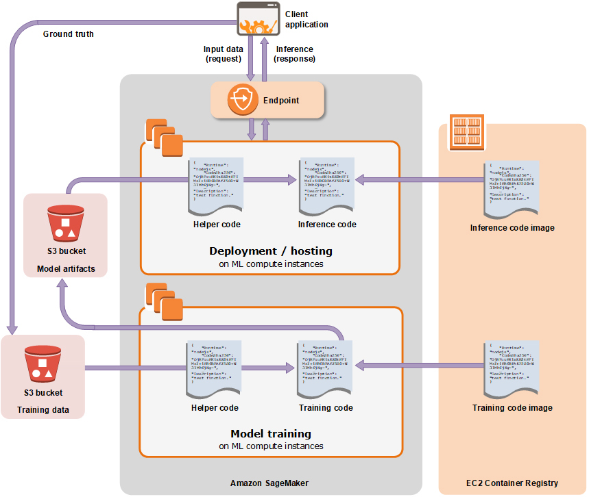

- 00 开篇词 云计算，这是开发者最好的时代.md.html
- 01 区域和可用区：欢迎来到云端数据中心.md.html
- 02 云虚拟机（一）：云端“攒机”，有哪些容易忽视的要点？.md.html
- 03 云虚拟机（二）：眼花缭乱的虚拟机型号，我该如何选择？.md.html
- 04 云虚拟机（三）：老板要求省省省，有哪些妙招？.md.html
- 05 云硬盘：云上IO到底给不给力？.md.html
- 06 云上虚拟网络：开合有度，编织无形之网.md.html
- 07 云端架构最佳实践：与故障同舞，与伸缩共生.md.html
- 08 云上运维：云端究竟需不需要运维？需要怎样的运维？.md.html
- 09 什么是PaaS？怎样深入理解和评估PaaS？.md.html
- 10 对象存储：看似简单的存储服务都有哪些玄机？.md.html
- 11 应用托管服务：Web应用怎样在云上安家？.md.html
- 12 云数据库：高歌猛进的数据库“新贵”.md.html
- 13 云上大数据：云计算遇上大数据，为什么堪称天作之合？.md.html
- 14 云上容器服务：从Docker到Kubernetes，迎接云原生浪潮.md.html
- 15 无服务器计算：追求极致效率的多面手.md.html
- 16 云上AI服务：云AI能从哪些方面帮助构建智能应用？.md.html
- 结束语 与云计算一起，迈向未来.md.html
- 捐赠
16 云上AI服务：云AI能从哪些方面帮助构建智能应用？
你好，我是何恺铎。
欢迎来到我们课程中PaaS篇的最后一讲，今天，我们来讨论云上的AI服务。
近十年以来，从机器学习到深度学习，AI技术的理论体系和软件生态获得了跨越式的大发展，也把很多不可能变成了可能，开始深刻地影响着我们的生活。2016年谷歌的AlphaGo和李世石的巅峰对决，更是让“人工智能”声名大噪、家喻户晓。
技术的突破催生出了巨大的市场和需求，所以各大云计算厂商都非常重视在AI这方面的投入，致力于全方位地为人工智能应用赋能。不少云计算品牌在自己的名称中也加上了“智能”二字，对于AI的重视程度可见一斑。
我猜你也一定被云AI铺天盖地的广告宣传轰炸过。不过作为开发者，我们不能仅仅停留于宣传口径的话术，而是要切实地了解云上AI究竟有哪些能力，知道怎样让它与应用程序的开发和运行集成。
那么，云AI能从哪些方面帮助我们构建智能应用呢？
可以这样说，云对于AI的支持，是从不同层面以多种形式体现的。比如在基础设施的层面，我们在第3讲中也提到过，带有强悍GPU的虚拟机机型已经纷纷登场了。你可以随时用上最新最酷的GPU硬件，再配合一些云厂商预置的专用虚拟机镜像（比如Azure的Data Science Virtual Machine和AWS的Deep Learning AMI），就可以用单机开展一些AI方面的工作了。
当然，我们这一讲的重点，是AI相关的PaaS服务。它们其实也大致分为两类：一类是各种成熟能力的开放，是云厂商已经构建好的现有模型和API；另一类则是机器学习的全生命周期管理支撑平台，可以帮助你构建属于自己的机器学习模型。
开箱即用的AI服务
我们先来看一看，云上可以“拿来即用”的现成AI能力。
各家云都推出了很多不同种类、适合不同场景的内置AI服务，比如在Azure云上，它们被统称为Azure认知服务（Cognitive Services)。这类服务使用起来非常方便，门槛较低，你不需要掌握那些高深的模型构建知识，就可以站在巨人的肩膀上，把这些高大上的能力接入你的应用程序。
这类服务的特点，一般是将非结构化数据处理分析的通用需求场景，进行了封装和开放。你可以通过云端标准的API和SDK来进行调用，一般会按调用次数进行收费。
这里所谓的非结构化数据，指的是图像、视频、语音、文本等包含丰富信息的常见数字化内容。对于这些内容的理解，用传统的程序逻辑很难解决，但这恰好是人工智能的强项，它可以深入分析这些内容，并进行信息提取和转换。
不同的非结构化数据类型，对应着不同的人工智能研究领域，也对应着相关的各种云上AI服务。
比如计算机视觉，就擅长处理图形图像，它衍生出了人脸识别、物体检测、OCR（光学字符识别）、安全扫描等很多细分的能力，也催生出了多种多样的云上图片分析服务。你可以想象，从线下的安防监控和门禁闸机，到线上对用户上传图片证照的扫描和处理，图片服务的应用场景是非常广泛的。
在近期疫情肆虐的背景下，有云厂商还迅速推出了人脸口罩检测的AI服务，体现了云厂商的快速应变能力和社会责任感。下面的Java代码片段，就展示了通过官方SDK来调用阿里云上人脸口罩检测API，这可以判断给定图片中的人物有没有佩戴口罩。
//设定账号的AccessKey和地域信息
DefaultProfile profile = DefaultProfile.getProfile("cn-shanghai", "<accessKeyId>", "<accessSecret>");
IAcsClient client = new DefaultAcsClient(profile);
//构造人脸口罩识别请求
DetectMaskRequest request = new DetectMaskRequest();
request.setRegionId("cn-shanghai");
//设置待识别的图片路径
request.setImageURL("http://yourbucket.oss-cn-shanghai.aliyuncs.com/mytestimage1.jpg");
//发送请求，获取识别结果
DetectMaskResponse response = client.getAcsResponse(request);
System.out.println(new Gson().toJson(response));
这段并不复杂的调用代码，也大致说明了使用一个云上AI服务的过程，主要就是设置好输入的图片和一些辅助参数，然后就能通过Web请求来进行图片分析了。这里我测试了一张网络上路人佩戴口罩的照片，执行之后的结果输出如下所示：
{
"RequestId": "F24CXXXX-14B6-4E46-AAF8-C11E2E54XXXX",
"Data": {
"Mask": 2,
"FaceProbability": "0.76107993841171265"
}
}
可以看到，返回的JSON格式结果中，Mask字段的值为2，就说明了图片中检测出了人脸并且佩戴了口罩。
补充：该API返回值为0代表未检出人脸，1代表人脸未佩戴口罩。甚至它还能判断有口罩但没有正确佩戴的场景，相应的返回值为3。具体请参见阿里云相关文档。
自然语言处理（Natural Language Processing，NLP），也是一大类非常热门的AI服务，它主要处理的对象是文本。借助这方面的云上能力，你能够进行情感判断、命名实体识别、机器翻译等和文本分析有关的复杂功能，非常有助于构建舆情监测、用户评论分析之类的应用程序。
由于语言之间的显著差异，在调研这类NLP服务时，你要注意它们对于不同语种的具体支持情况。不同厂商的服务，可能在语言上面有不同的侧重。一般来说，国际厂商会先强化对于英语的支持，而国内厂商则通常会很重视处理中文文本的能力。
语音类智能服务，同样是一个很受关注的领域，它能识别声音中的内容信息，尤其是把音频转换成文字。还有一种有趣的反向转换服务是语音合成，也就是把文本转化为语音，现在也已经是越来越成熟的技术。
比如说，AWS技术博客上的大多数文章，网页上方基本都有一个音频的版本，它的朗读效果非常接近真人，但它其实都是用AWS上的Amazon Polly服务来自动生成的。
人工智能服务还可以处理视频信息。你可以把视频分解为一帧一帧的图片和一段一段的音频，然后通过组合上述的各类服务来进行处理和整合；你也可以使用一些直接支持视频内容的云AI服务，如AWS Rekognition和阿里云“视频内容分析”来进行视频分析。这些视频分析服务，能输出视频中的场景、文本、面孔和各类物体或常见标识，你可以用在监控视频分析、用户内容审查等常见的应用场景。
当然，对于每一个细分领域的模型，想要训练成一个成熟准确的智能模型，其实都很不容易，这需要大量的训练数据，和旷日持久的调优与迭代。这些开箱即用的服务如果满足你需求的话，其实是非常简单而有效的选择。你也不需要对模型的内部实现有任何了解，把它放心地交给云厂商就好了。
构建你自己的AI模型
前面提到的那些现成的AI服务，大多是以黑盒的形式来提供能力的。所以，当这些内置服务不能满足我们需求的时候，那就需要我们“自己动手，丰衣足食”了。
我还是拿口罩识别的场景来给你举个例子。假如你不仅需要识别口罩，还想进一步判断口罩的类型，看它是普通医用口罩，还是高防护级别的N95口罩，这样的需求恐怕就需要你自己来定制了。
所以说，按照特定的需求来构建自己的定制模型，也是普遍而常见的场景，它也有助于应用端形成自己的特色和核心竞争力。
补充：有的时候，成本也是一个驱动应用端自行训练模型的因素，尤其当业务需求规模大、调用次数相当频繁的时候。这时内置AI服务的按次付费模式就会显得比较昂贵了。
很多的公司都选择了组建自己的团队，有针对性地构建自有模型。不过呢，在尝试AI工作一段时间以后，大家普遍容易遇到的现实问题，就是AI工作的随意性，没有形成体系和章法。比如，构建过程的信息分散而混乱，核心代码和脚本存储在个人PC上；数据和模型得不到妥善的管理，甚至会因人员离职导致丢失；还有GPU训练资源紧张，模型成品部署困难、运行不稳定等等。
当云厂商们发现这些痛点之后，就逐渐地开始对云上的机器学习基础设施服务进行布局和投入，致力于帮助用户构建自己的模型。现在这一块已经成为了云厂商们新的争夺热点，代表性的服务，就有AWS的SageMaker，Azure的Machine Learning，以及阿里云的机器学习平台PAI等。
无论你想要构建哪种模型，包括经典机器学习和深度学习，它们共性的地方在于，都有一个类似的流程和步骤，包括数据准备和标注、模型训练、模型部署等。云上机器学习服务，它的目标就是非常精准地支撑和赋能这些重要环节，帮助你进行贯穿全生命周期的模型构建和管理。
所以，这类平台非常适合数据科学家和算法工程师日常使用，也很适合团队的管理者了解和把控AI研发端的总体情况。
那么，这类平台究竟是如何服务机器学习任务中的各个主要步骤的呢？
首先是数据准备的环节。
机器学习服务能够让你注册、管理和标注数据集，这些数据集通常位于对象存储当中。尤其是数据标注工作，你应该知道，它是机器学习工作中极为重要的一个步骤，是一切模型构建的基础。可是数据标注又偏偏非常枯燥，而且往往需要多人协作、交叉验证，才能保证标注结果的质量。
好在，机器学习平台为我们集成了数据标注相关的功能，让这件复杂的事情变得十分简单。你可以直接在云提供的网站门户中，来进行数据标注的工作，甚至可以组织团队分配任务，并回收那些正确的结果。这些功能的存在，几乎能够抵得上一个小小的“众包平台”了。
为了给你一个直观的印象，我在AWS S3中上传了几张口罩的图片，然后用AWS SageMaker的标注模块 Ground Truth 创建了一个“标注口罩”的图片标注任务。你可以参考下面这个真实的工作台截图：
AWS SageMaker Ground Truth图片标注功能示例
其次，是尤为关键的模型训练环节。
在这个环节，机器学习平台一般都提供了许多内置的常见机器学习和深度学习算法，分别适用于不同的应用场景。你可以基于这些内置算法，使用自有数据训练出符合你需要的模型。
你可以在平台提供的类似Jupyter Notebook的开发环境中撰写编程脚本，来控制模型选择、参数配置和训练数据输入等在模型训练中，一系列的关键逻辑和设置。这些工作大多是使用Python语言，厂商也一般会提供相应的Python SDK，来帮助你和云上机器学习平台交互。
补充：也有部分厂商提供了可视化的环境，允许你在画布上拖拉控件和使用流程图的方式来训练模型，比较适合机器学习的初学者和没有编程背景的用户。
接下来，我就以AWS SageMaker为例，带你看下如何调用内置的算法来进行模型训练。
from sagemaker.amazon.amazon_estimator import get_image_uri
# 获取内置算法对应的镜像
training_image = get_image_uri(region_name, 'builtin-algorithm-name')
# 创建Estimator实例
estimator = sagemaker.estimator.Estimator(training_image,
role,
train_instance_count=1,
train_instance_type='ml.c4.xlarge',
output_path=s3_output_location,
sagemaker_session=sess)
# 设置模型训练的超参数
estimator.set_hyperparamters(...)
# 将训练数据喂送给模型进行训练
estimator.fit('s3://bucket/path/to/training/data')
即使你是第一次接触使用SageMaker这样的工具，也很容易理解上面代码片段中语句的含义。其中，SageMaker的核心概念Estimator，**就是模型生命周期管理的主要抓手，你可以用它进行高层的语义操作，比如算法的选择、超参数的设置、训练数据的输入等等。这些高层次的方法使用起来清晰明了，它们会为你代劳与云平台底层资源的交互。
注意：为了便于讲解说明以及突出重点，我对脚本中调用参数等处进行了适当简化。下面的举例同样如此。实际使用时，你可以根据具体使用的模型类型，参考云厂商的详细文档。
除了可以使用厂商内置的机器学习算法，云上AI平台也兼容开源的机器学习和深度学习框架，比如著名的Scikit-learn、TensorFlow、PyTorch、MXNet等等。使用开源机器学习框架，能够让你彻底地控制你的底层算法和模型结构，也便于相关代码在不同平台的复用。
你也许会很好奇，像SageMaker这样的厂商自有机器学习体系，它是怎么集成和支持这些开源框架的呢？我们来观察下面的代码示例：
from sagemaker.tensorflow import TensorFlow
tf_estimator = TensorFlow(entry_point='tf-train.py',
role=role,
train_instance_count=2,
train_instance_type='ml.p2.xlarge',
framework_version='2.1.0',
py_version='py3',
distributions={'parameter_server': {'enabled': True}}))
tf_estimator.fit('s3://bucket/path/to/training/data')
可以看到，和前面的自有算法一样，这里同样使用了Estimator的概念，来管理和控制训练过程。不过你要注意一下这里的TensorFlow类，它不是指TensorFlow框架本身，而是一个在SageMaker中，用于管理封装TensorFlow相关模型的Estimator。秘密包含在作为entry_point参数的脚本文件tf-train.py中，在这个脚本里，你才会编写真正的TensorFlow代码。
小提示：当然，为了能在SageMaker环境中顺利运行，你的TensorFlow脚本需要遵循一些AWS规定的标准，比如环境变量设置、输入输出的路径和格式等。
所以说，SageMaker是通过将控制层和算法实现层分离的方式，来同时支持自有算法和开源框架的。无论你是使用什么算法和模型，它的上层仍然是统一使用Estimator的接口，实现了对具体算法的抽象。
另外值得注意的是，云上机器学习平台能够很容易地让你调动云上的计算资源（比如通过上面的train_instance_type和train_instance_count参数），不需要我们手动来进行创建和维护。尤其是那些支持分布式训练的模型算法，在云端充足的CPU/GPU资源和弹性分配机制的加持下，你可以很容易地对模型训练进行充分的并行化，这大大缩短了模型训练所需的时间。
最后，则是模型发布和部署的环节，也就是我们需要把训练完成的模型进行保存和管理，以及进行线上的发布和运行，有时这也被称为推理（Inference）阶段。
同样借助上面的Estimator对象，这里我们只要简单地调用一下 deploy方法，就可以把训练好的模型部署到生产环境中，并通过新生成的 predictor对象来进行模型调用了，如下所示：
# 将前面fit方法生成的模型部署到SageMaker端点上进行服务
predictor = estimator.deploy(initial_instance_count=1, instance_type='ml.p2.xlarge')
# 通过predict方法进行模型调用
response = predictor.predict(data)
甚至对于大批量数据的场景，你还可以借助transformer机制，离线地进行模型的批量调用。
transformer = estimator.transformer(instance_count=1, instance_type='ml.p2.xlarge')
# 批量调用数据
transformer.transform('s3://my-bucket/batch-transform-input')
transformer.wait()
# 随后可以从transformer.output_path中下载结果数据
你看，SageMaker的这些功能还是很贴心的，它大大地简化了模型的部署和推理调用，相当程度地解决了模型开发者未必熟悉的Web服务的工程性问题。
好了，对于机器学习基础设施服务，我们就讨论到这里。你可以通过下面的SageMaker架构流程图，来加深对这个支撑体系的印象。这一类云服务在你构建自有模型时，能帮你提供一站式的解决方案，能在多个核心环节给予你鼎力的支持。

AWS SageMaker架构流程图（来自AWS官网）
课堂总结与思考
当今世界的现代应用程序，如果其中没有一点AI的元素，恐怕都会不好意思发布了。与这样的趋势相匹配，云平台都希望成为构建和运行新一代智能应用程序的最佳平台。
你可以根据自己的需求，直接使用云上AI服务中琳琅满目的内置模型，也可以利用云上机器学习平台，来高效地构建你自己的智能模型。云上AI平台还提供了很好的管理手段，来保存和使用公司的数据和模型资产，让你的AI工作朝着规范化、工程化的方向发展。
AI技术博大精深，你当然需要通过专门的课程去系统学习。而我们这一讲的价值在于，主要关注了云对于AI任务在不同层面的结合点和支撑点，包括模型、数据、算法、计算资源、部署推理等等。通过今天的介绍，希望你在云上实践时，能够知道如何按图索骥，在某个细分的AI场景进行深入的尝试。期待你的下一个智能应用。
最后作为惯例，我们还是要谈一谈这里的风险，主要仍旧是厂商绑定的问题。如果你比较关注可迁移性，那么在使用云上AI服务时，你就需要注意甄别，哪些是云的自有生态，哪些是开源组件。当然，云厂商其实也在不断升级，努力地让云上AI服务从完全内置的黑盒到逐渐走向开放和兼容。最终让每一个环节能够拆开单独使用并且互相解耦，这是未来的一个发展趋势。
补充：我们也不要“谈绑色变”，绑定是正常的商业选择，也常会给用户带来效率的提升。云计算的很多服务和开源世界的若即若离，其本质是在生态发展和客户黏性，在技术普惠和商业利益中，不断进行着博弈和平衡。
这一讲，我留给你的课后问题是：
- 作为模型构建的重要组成部分，还有一个“调参”（Hyperparameter Tuning）的阶段，它也是一件困难而又麻烦的事情。你知道调参具体是指什么意思吗？在这方面，云上AI服务能够提供帮助吗？
- 前面我们谈到了可迁移性的问题，它不仅是指代码，也包括训练好的模型。那么，外部训练好的模型能够放置到云上AI服务中吗？在云上训练好的模型，又能不能取下来，放到本地环境中运行呢？
欢迎你给我留言和参与讨论。如果你觉得今天的内容有帮助，也欢迎把这篇文章分享给你的朋友。
好了，至此我们PaaS篇的内容就全部结束了。我是何恺铎，感谢你的阅读和陪伴。我还有许多想说的话，让我们在结束语中再见。
© 2019 - 2023 Liangliang Lee. Powered by gin and hexo-theme-book.